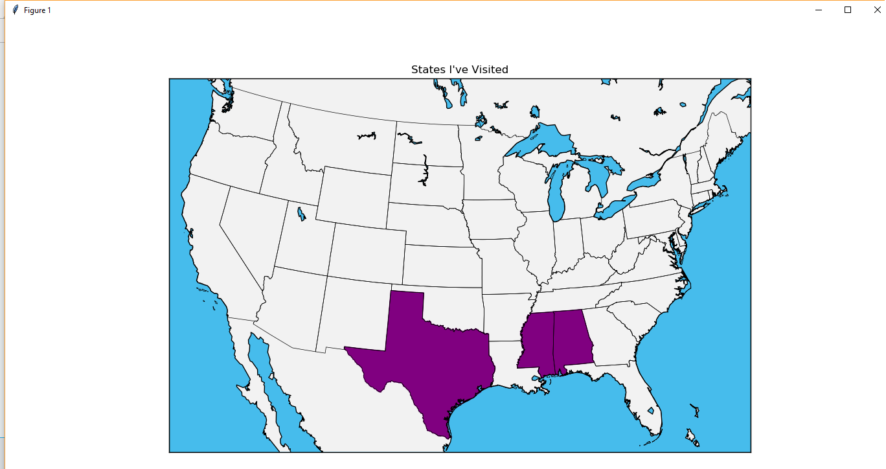
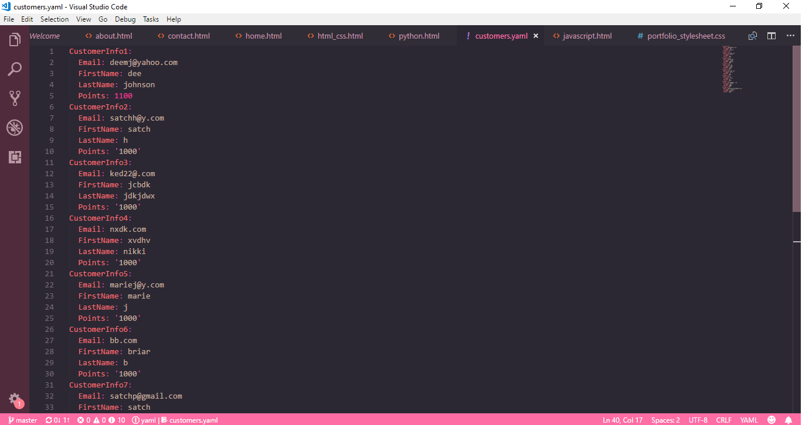

Alien Invasion
This is a recording of my first major Python project. I created this Alien Invasion Game over the course
of a couple of weeks. The three ships in the top left hand corner are how many lives you have left.
In the right hand corner, it tells you what level you are on and your score. You can press the Q button on your
keyboard to quit the game.
 To see the source code click the icon.
To see the source code click the icon.
States I've Visited
This was a project that I created at the beginning of the program. I wanted to create something that would shade
in all the states that you have ever been to. So it takes you through a series of questions and it ask you to name
the different states that you have been to. It then takes the information that you have given and generates a map
that has all of the states you've inputted shaded purple.
To see the source code click the icon.
Customer Loyalty Program
In this project I created a customer loyalty program. This program basically will take the email that you input and
check to see if you ar in the database. If you are not in the database, the system will ask of you want to sign up.
It then takes you the process of getting your information. If you are already in the system, it will add points each
time you log in.
To see the source code click the icon.